Home
UX/UI
I believe design is an empathetic process.
Based in Pacific Grove, CA.
About me
Portfolio
Using this portfolio as an example of how I think about UI/UX, things like responsive behavior, navigation, and interaction.
ReachOut USA
BrandingQuickBooks Mobile
UX/UIQuickBooks Payments
UX/UIQuickBooks Navigation
UX/UIProject 5
UX/UIProject 6
UX/UIContact
Poetry
ReachOut USA
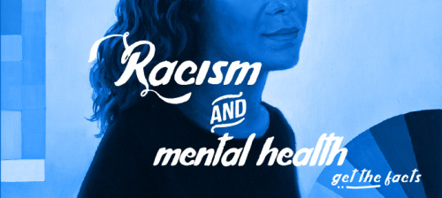
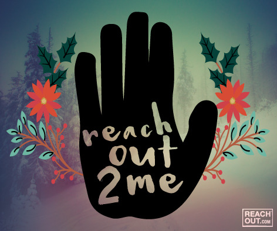
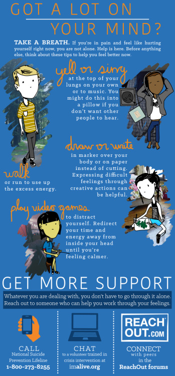
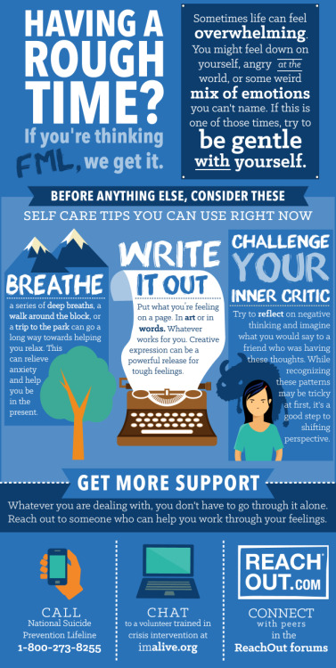
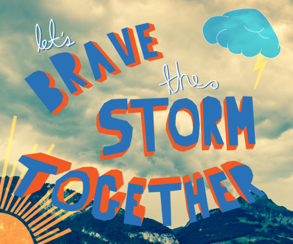
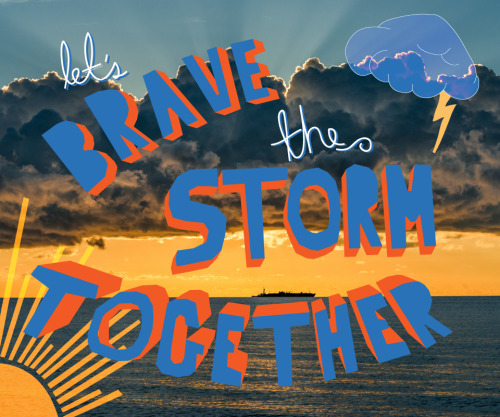
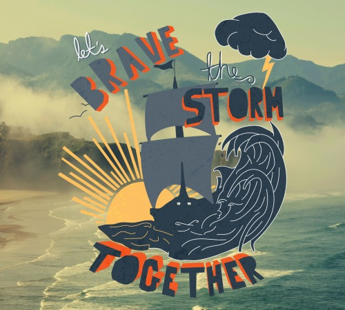
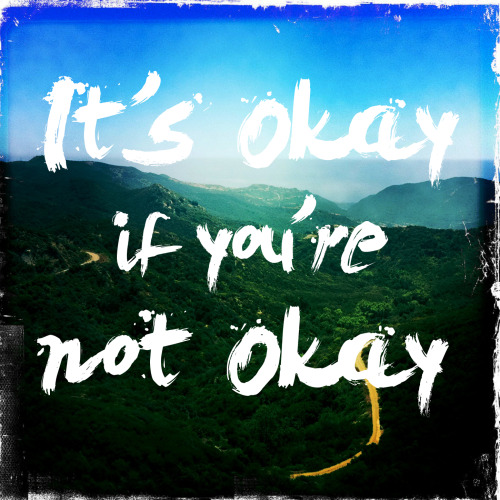
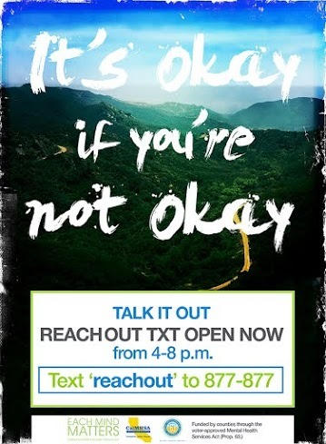
no fixed star
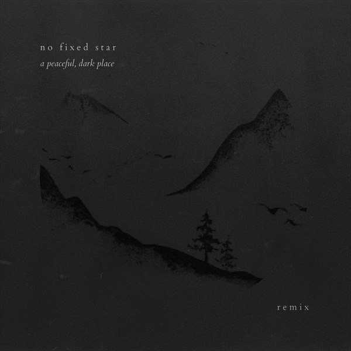
QuickBooks Mobile
Where we started
When this project began, the team had a fairly large charter: find opportunities to increase the payments processing volume on QuickBooks mobile.
So we launched into research mode and started talking to customers. From what we heard, we started iterating, prototyping concepts, and refining ideas with their input. These early “follow me homes,” comic strip readings, feature purchasing exercises, and low fidelity prototypes were what ultimately shaped our future roadmaps and launches.
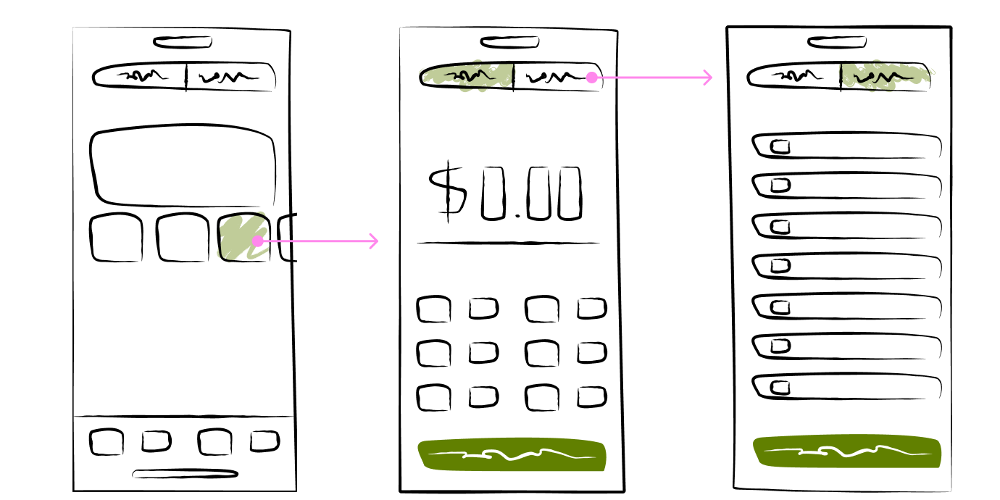
What we learned
What testing surfaced about how merchants actually take payments on mobile:
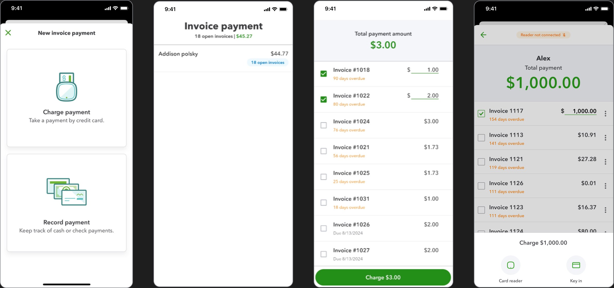
What we did about it
So the team restructured the QuickBooks Mobile app (which in a large company where you are one vertical team contributing to an ownership team with different incentives, isn't always easy). What we did was:
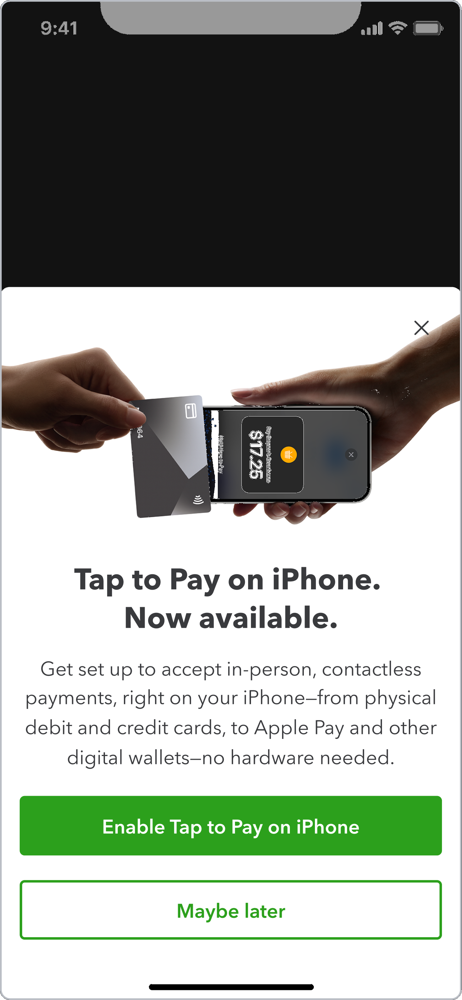
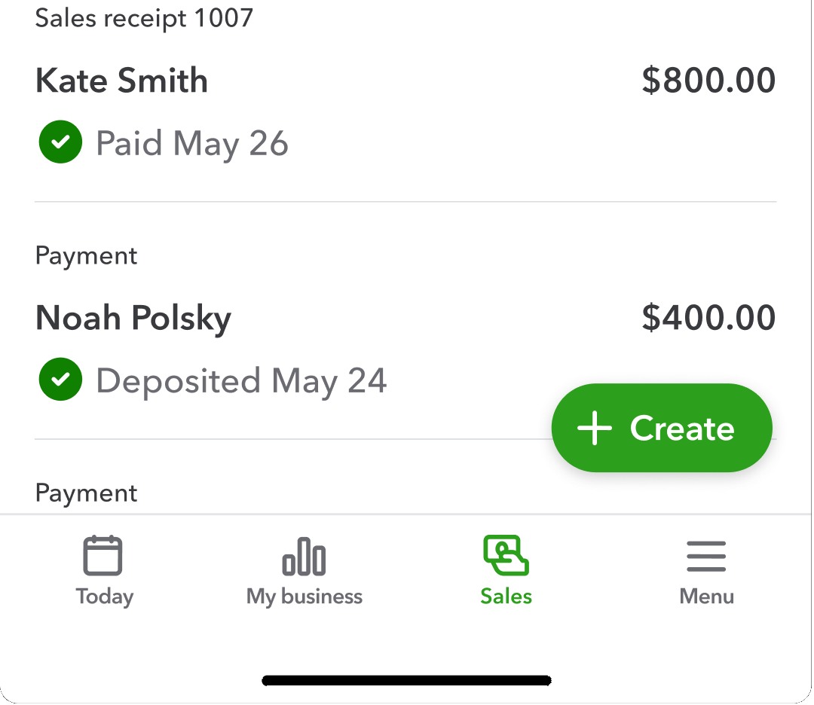
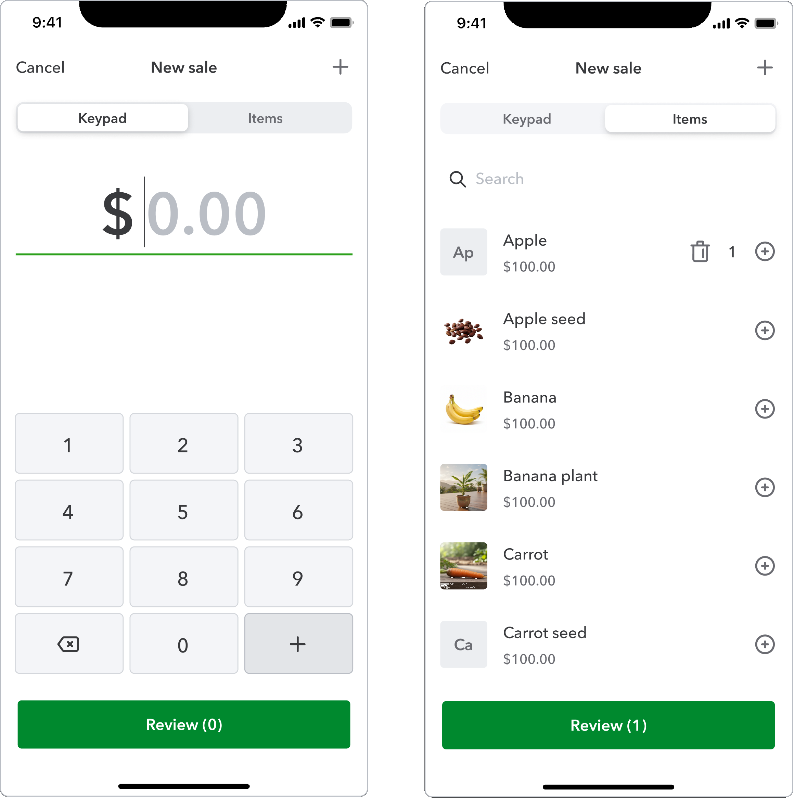
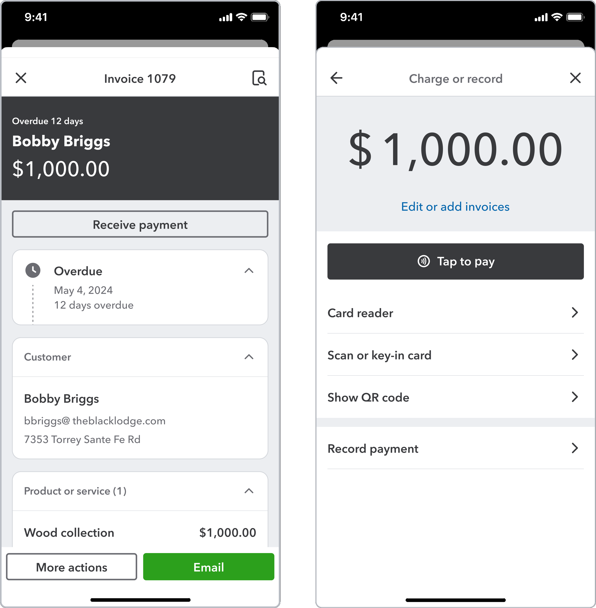
Impact
We shipped these new experiences on iOS & Android and overall saw:
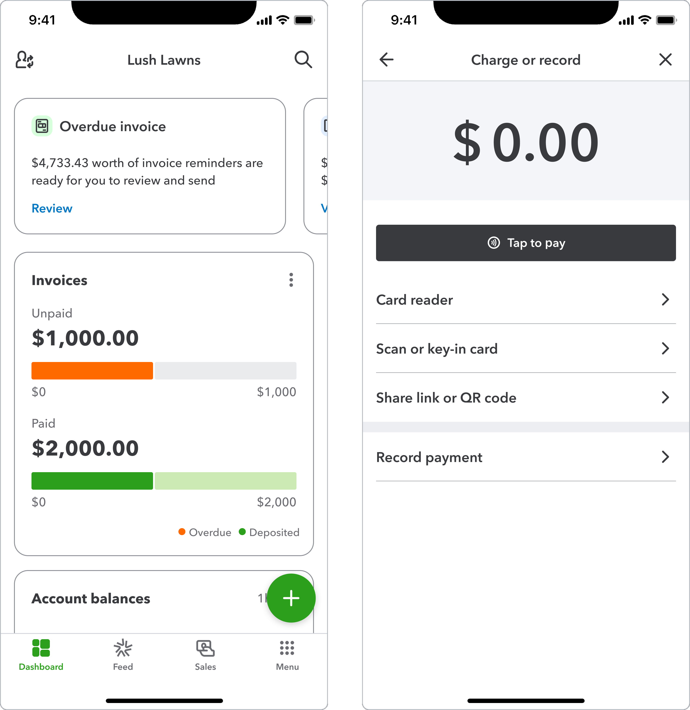